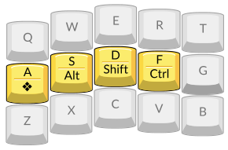
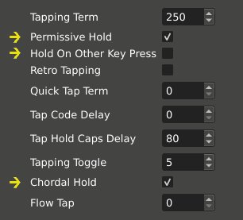
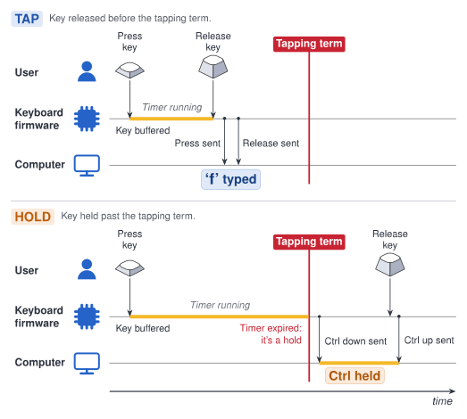
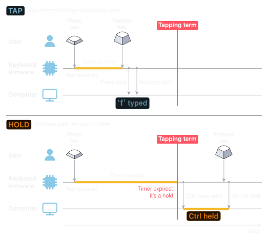
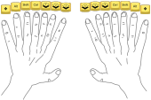

Home row mods are hard to use
Pascal Getreuer, 2026-10-04
Overview
“Home row mods” or “HRMs” are a much talked about scheme to eliminate awkward reaches and hand contortions. The modifier keys—Ctrl, Shift, Alt, GUI—are mapped directly on the home row as mod-tap keys. The ergonomic appeal is that this reduces finger travel and awkward hand positions.

I wrote this guide because I want to make HRMs easier to get into. I hope to demystify the (often technical and subtle) tap-hold configuration options that matter for HRMs. Making HRMs better is a goal I’ve personally put a lot of effort into, including contributed multiple features to QMK, Vial, and ZSA Oryx that improve the HRMs experience. I’ll describe these, too. When it clicks, using HRMs is a joy.
Making HRMs work for you
Despite their ergo benefits and popularity, there’s a problem. Home row mods are hard to use, at least at first, for most people. It’s not just you. So, let’s talk about how to fix home row mods. Configuration is critical, and it takes time to get used to it.
The main challenge with HRMs is that one needs to avoid triggering
the mod actions accidentally during fast typing. You might think of
normal typing as pressing and releasing one key at a time like
“A ↓, A ↑, S ↓, S ↑.” But
fast typing is often “rolled”,
pressing the next key before the current one is released, like
“A ↓, S ↓, A ↑, S ↑.” This
happens especially over adjacent keys like as in QWERTY.
There’s also the complementary problem of failing to trigger a mod when
it was intended.
urob’s “Timeless Home Row Mods” is a popular HRMs configuration originally written for ZMK, which has since been ported to QMK and to Kanata. While it’s not the only approach, it’s a highly effective solution. urob introduces his configuration incrementally, explaining how each option solves a problem—worth a read, even if you don’t use ZMK.
Another excellent resource is Precondition’s guide to home row mods. It explains a bunch of tap-hold configurations and variations to mitigate these problems.
QMK firmware
Define HRMs as “MT(mod,kc)” mod-tap keys in your layout. Don’t use Tap Dances for that.
Technical limitation: The kc “tapping key” in
MT(mod,kc) is limited to basic keycodes. If needed,
you can work around this limitation through a bit of custom handling
code in process_record_user() to intercept the tapping
events. See MT
doesn’t work with this keycode for examples of this technique.
Additionally, I recommend these tap-hold settings in your
config.h as a starting point:
#define TAPPING_TERM 250
#define CHORDAL_HOLD
#define PERMISSIVE_HOLDThe above is essentially a simplified version of urob’s timeless home row mods, ported to QMK. Read my post on Timeless Home Row Mods in QMK for a longer configuration guide exploring additional options. See the Tap-Hold documentation for full details on what these options mean.
See also Configuring Home Row Mods in the QMK documentation.
Vial
Vial is a fork of QMK. Use the LCtl_T, LSft_T, etc. mod-tap keys under the Quantum tab for your home row keys. Don’t use Tap Dances for that. Under the QMK Settings tab, supposing you have Vial 0.7.4 or newer, check Permissive Hold and Chordal Hold, and ensure that Hold On Other Key Press is unchecked.

Vial pre-0.7.4: Older versions of Vial use different naming and don’t expose Chordal Hold. Make sure Permissive Hold and Ignore Mod Tap Interrupt are both checked.
See also the Vial documentation on Setting up home row mods.
ZSA Oryx
Oryx uses QMK under the hood. Implement your HRMs by assigning (letter) “when tapped” and (modifier) “when held” functions to the home row keys. Make sure that both “when double tapped” and “tapped, then held” are clear (don’t use Tap Dances).
Additionally, start with these settings under Advanced Configuration Settings (accessed in Oryx through the gear icon on the upper right):
- Set Tapping term to 250 (Tapping tab).
- Check Permissive Hold (Tapping Dual-Functions tab).
- Check Chordal Hold (Holding tab).
See also ZSA’s blog post Layout Buffet – Home-row mods.
📝 Note for QMK, Vial, and Oryx users
Don’t use Tap Dances for HRMs keys!
QMK’s Tap Dance is poorly suited for HRMs. It uses a simplified decision logic, separate from QMK’s mod-tap implementation, that lacks roll protection and essential tap-hold options like Permissive Hold.
Use QMK’s mod-tap keys instead. Mod-taps (and similarly layer-tap keys) use an elaborate set of rules to decide when the key is tapped vs. held, much of this designed with HRMs in mind. I recommend this:
- QMK: use the
MT(mod,kc)mod-tap keycodes. - Vial: use the
*_Tkeys under the Quantum tab. - Oryx: assign “when tapped” and “when held”. Ensure that both “when double tapped” and “tapped, then held” are clear.
ZMK firmware
ZMK users should read urob’s Timeless
Home Row Mods description, which is written for ZMK. You may also
follow the Homerow
Mods example in the ZMK documentation, particularly with
flavor = "balanced" (similar to Permissive Hold) and positional
hold taps (similar to Chordal Hold).
Dygma Bazecor
See Dygma’s blog posts:
- How to Set up Home Row Modifiers on your Keyboard
- Stop twisting your fingers! Home-row mods vs. Thumbkeys
Kanata
Follow @ldebritto’s configuration guide for a sophisticated Kanata implementation of Timeless Home Row Mods.
See also the HRMs tutorial configurations in
Tuning HRMs
Tapping term tuning: Setting the tapping term is a balance. “Timeless home row mods”-like configuration aims to make the behavior less sensitive to the exact choice of tapping term. Still, it may need tuning:
If you get many accidental mod triggers, increase the tapping term.
Or, if you often intend the mod but get the tapping keys, decrease the tapping term.
Try rpnfan’s tap-timeout calibrator to tune the tapping term for your typing.
In addition to good configuration, I suggest you may need a couple of months to get used to HRMs. Everyone’s typing habits are different. In piano terms, my typing used to be very “legato,” with my fingers often lingering on preceding keys, which produced a lot of accidental mod triggers.
After a couple months of persistence, my typing adapted. My brain eventually rewired to typing in a more staccato style. I have far fewer accidental mod triggers, though I do still have one every once in a while.
HRMs-related tips and features
More HRM options
Here are a few other tap-hold options that might improve your HRMs experience.
Flow Tap: Use Flow Tap in QMK-based firmware to disable HRMs during fast typing. When a tap-hold key is pressed within the flow tap term of the previous key, it is settled immediately as tapped. This option is extremely effective for some users in curbing accidental mod triggers. For ZMK, use require-prior-idle-ms. For Kanata, see gerhard-h’s automatic fast typing layer and argenkiwi’s implementation.
Speculative Hold: Use Speculative Hold to apply mod-tap mods immediately on key down. This is particularly useful to remove lag when using mod-taps together with an external mouse. For ZMK, use hold-while-undecided.
Quick Tap: A little known feature! If you quickly tap and then hold the key, its tap action is repeated. In QMK, this is enabled by default and disabled by setting QUICK_TAP_TERM to zero. In ZMK, it is enabled with quick-tap-ms.
Or instead of tap-holding, use a repeat key: Repeat key in QMK, Repeat key in ZMK, Repeat key in Kanata.
Retro Tapping: Normally, holding and releasing a mod-tap key produces no typing. With QMK Retro Tapping or ZMK retro-tap, doing so sends the tapping keycode, even if the key is released outside the tapping term. I don’t recommend this option in a “timeless home row mods” approach (I’d suggest first increasing the tapping term), but this option can be helpful if your taps sometimes exceed the tapping term.
Per-key configuration: QMK’s tap-hold options may be configured per key. This helps with fine-tuning settings for slower pinkies or exceptionally handling certain keys or key chords.
- Tapping term: TAPPING_TERM_PER_KEY
- Permissive Hold: PERMISSIVE_HOLD_PER_KEY
- Quick Tap: QUICK_TAP_TERM_PER_KEY
- Flow Tap: is_flow_tap_key, get_flow_tap_term
- Chordal Hold: chordal_hold_handedness, get_chordal_hold
- Retro Tapping: RETRO_TAPPING_PER_KEY
- Speculative Hold: get_speculative_hold
Oryx supports per-key tapping terms. ZMK and Kanata have their own means for per-key HRMs configuration.
Easing the Shift HRM
Of all the mods, Shift is often said to be the most troublesome, the “Achilles heel of HRMs,” because of shifting to capitalize during fast typing. Some features can help:
Typing ALL_CAPS words: Typing in all-caps is awkward with home row Shifts. We either perform finger gymnastics or need to stop typing in the middle of the word and trade off shifting with the other hand. Use a Caps Word implementation to get around this: Caps Word in QMK, Caps Word in ZMK, Caps Word in Kanata. Caps Word is like the standard Caps Lock, but turns off automatically at the end of the word. This is useful for typing abbreviations like “QMK” and all-caps identifiers in code like “
KC_LSFT.”Sentence capitalization: My Sentence Case community module is another way to avoid Shift, which automatically detects and capitalizes the first letter of sentences. Or for an explicit approach, consider a macro that types period, space, and sets a one-shot Shift mod to capitalize the next letter (QMK implementation).
Customized HRMs tricks (QMK)
One-shot home row mods: You may find it helpful to make some or all of your home row mods behave like one-shot mods. Thanks to @rafaelromao for this idea. An implementation in QMK is described here.
You can intercept tap-hold events in
process_record_user()for custom handling. Supposing for instance you have a LSFT_T(KC_D) key, intercept its events with:bool process_record_user(uint16_t keycode, keyrecord_t* record) { switch (keycode) { case LSFT_T(KC_D): if (record->tap.count > 0) { // Settled as tapped. if (record->event.pressed) { /*Tap ↓*/ } else { /*Tap ↑*/ } } else { // Settled as held. if (record->event.pressed) { /*Hold ↓*/ } else { /*Hold ↑*/ } } return false; // Skip default handling. // More macros... } return true; // Continue default handling. }The
record->tap.countfield tells whether the key is tapped vs. held. Note, its value is only set meaningfully for mod-taps, layer-taps, and a few other types of keys.
Do HRMs add input lag?
HRMs add input lag. Configuration can substantially reduce it, though not fully remove it.
📝 Note
Avoid HRMs when gaming! It’s not possible to remove HRMs lag completely. Add a separate layer to your keymap for gaming, and avoid mod-taps, layer-taps, tap dance, combos features on that layer for lag-free keys.
Input lag is the time between pressing a key and the computer registering the input. On QMK-based firmware, tap-holds increase input lag by as much as the tapping term. Depending on circumstances, the tap-hold decision can be settled before the tapping term, reducing lag. Configuration can help significantly in this respect to enable early decisions and improve responsiveness.
Why don’t they just remove the lag?!
This is not a bug or
quality of implementation issue, but an inherent limit. Whether the key
is being tapped vs. held depends (among other rules) on whether the key
is released before the tapping term. At the instant you press the key,
the firmware does not know when you will release it—that hasn’t happened
yet! The firmware does not send the key to the computer until it
concludes whether the key is tapped vs. held.


F on tap, Ctrl on hold” mod-tap key.
Reduce the lag with one or more of the following options, which enable early decision in certain circumstances:
Use QMK’s Flow Tap or ZMK’s require-prior-idle-ms: during fast typing, tap-hold keys settle immediately as tapped, fully removing the usual tap-hold decision lag.
Use QMK’s Speculative Hold or ZMK’s hold-while-undecided to apply mods on key down while mod-taps are undecided. Particularly for Shift+click with an external mouse, this option makes mod-taps instantly responsive.
Use QMK’s Chordal Hold or ZMK’s positional hold taps. If a tap-hold key is pressed and then, before the tapping term, another key is pressed on the same hand, the tap-hold key is immediately settled as tapped.
Considering lag more generally, I suggest checking the display lag of your monitor, using key switches with short pre-travel, and using an “eager” debounce strategy (QMK debounce algorithms). See also: How much lag do custom keyboards have?
Speaking for myself, HRMs lag might become more tolerable with experience. It’s just something that I’ve gotten used to. During normal use, I don’t think about or notice it.
Are HRMs only for slow typists?
A common misconception is that HRMs can only be used if typing slowly, particularly to trigger the mod hold actions. This is not the case.
The essential option to enable HRMs in fast typing is Permissive Hold, aka ZMK’s “balanced” flavor. This option makes it possible to trigger mod actions quickly, without having to wait out the tapping term. If you press a tap-hold key A, press and release another key B, then release A (a “nested” press like “A ↓, B ↓, B ↑, A ↑”), then A is settled as held even when the full sequence completes within the tapping term.
📝 Note
You may want to disable Quick Tap and Flow Tap on HRMs where the mod is desired during fast typing, as these options promote the tapping action instead.
In principle, there is no limit how fast one could type with HRMs. Still, there is some truth to HRMs slowing down typing. In my experience at least, a lasting issue is that my top speed is ~15 wpm slower with HRMs than without. That’s a fair deal for me in exchange for the typing comfort.
Home row layers
Can’t get enough of HRMs? While home row mods spark a lot of discussion, a less talked about yet appealing possibility is home row layers (“HRLs”?): layer-tap keys on home row. These keys type a letter when tapped, and momentarily switch to a layer when held.
HRLs motivation
Switching layers this way is in contrast to the conventional keymap design of using thumb keys for layer switching. A couple points in favor:
Ergonomics: Like the other fingers, thumbs can get overuse injuries. If you experience thumb discomfort, offloading layering work to other fingers is something to consider.
Typing stability: As the Ferris keyboard default keymap design notes say, “unhoming of the thumbs was a frequent source of typos for me when I used more than one thumb key frequently.”
HRMs and HRLs can be used together!
Modifiers are layers in a conceptual sense, so why not have a mix of both. However, there is a complication: in a typical HRMs scheme, all eight non-thumb fingers are already occupied with (some permutation of) Ctrl, Shift, Alt, GUI on the home row of each hand. Many users additionally need AltGr (right Alt) as a fifth mod-tap per hand, as this key has a distinct function from left Alt outside the US.
You’d need a lot of fingers to get all the mods and layers on home row…

To resolve that, some of these keys must demote to the bottom row (or top row, if you prefer). So, they’re not literally “home row” mods/layers, but “tap-hold keys among the alphas.” I recommend the same configuration above for this generalization of HRMs.
Here’s how I arranged them in my keymap:
I can access my four most-used layers as well as the four mods on each hand, arranged in a modified “GASC” order and with a few bottom-row keys to spare.
HRLs design thoughts
Not all mods and layers need be handled as tap-hold keys. I include only my most-used layers, and access lesser-used layers by other means.
You probably want mods in the same positions across most keymap layers for sake of consistency, as one normally does with HRMs. This is convenient for holding mod+layer combinations, so that they work equally independent of the order in which keys are held. However, it is probably unnecessary to reproduce layers switches in the same positions as the HRLs on base layer. You could use those free keys to place some mods more comfortably, though at the price that this design is order dependent—the layer-tap must then be held first before the mod.
Finger occupancy: Inevitably, some combinations of mods and layers are on the same finger, which are awkward to hold (unless, perhaps, you have have light switches and steno keycaps). Consider which mod- and layer-tap keys are unlikely to be held at the same time. These are good candidates for keys to put in the same column.
While mod+mod and mod+layer are common, layer+layer is not. So multiple layer-taps in the same column is no problem (though Tri Layers is an exception).
Certain mod+mod combos might be rare. I don’t need to use Alt and GUI together, so I put those mod-taps in the same column.
Depending on the layer, combining with certain mods might be rare. I don’t use mods on my symbol layer, for instance.
In my keymap, SYM + NAV switches to the
NAVlayer with Ctrl held (done through some bespoke custom handling). This solves my NAV and Ctrl keys being in the same column.
It’s not for me; HRMs alternatives
If home row mods are not for you, that’s Ok. Here are several alternative approaches to modifiers that you might consider.
Consider a mix of HRMs and regular mod keys. HRMs don’t have to be all-or-nothing. As mentioned earlier, Shift is probably the most troublesome as an HRM because of shifting to capitalize in fast typing. Many users find it effective to use a regular key for Shift instead of a dual-role HRM key. Or, have Shift as both a dedicated key and HRM, using the HRM for sake of chording multi-mod hotkeys like Ctrl+Shift+V. You can consider a partial or hybrid approach to HRMs with the other mods as well.
Bottom row mods: move the mod-taps down to Z X C V and M , . / QWERTY positions on the row below home row. The bottom row keys tend to be used a lot less than the home row, making accidental mod triggers less of a problem. Several other variations are suggested in precondition’s guide.
Callum Oakley’s mods (callum-style mods) are sticky (one-shot) mods on the home row of a separate layer. No timers are involved so that mod keys can be tapped as fast as you like. A similar idea is in SteveP’s Seniply keymap, with sticky mods on the Extend layer, inspired by the use of mods in DreymaR’s original Extend layer. Among small keyboard users, Callum mods are a popular alternative to HRMs.
QMK’s Auto Shift is a scheme where long-pressing a key types the shifted version of the key, preferred by some as an alternative to HRM Shift. For ZMK, see the Autoshift example in the Hold-Tap use-cases for similar behavior.
Further reading
Documentation
Configuration guides
- A guide to home row mods – @precondition’s epic HRMs guide
- urob’s Timeless Home Row Mods
- The tap-timeout calibrator by @rpnfan
- A try on urob’s timeless home row mods for kanata by @ldebritto
- ZSA blog – Layout Buffet – Home-row mods
- Dygma blog – How to Set up Home Row Modifiers on your Keyboard
Related
- DreymaR’s Extend layer
- Predictive Tap-Hold for QMK – @jgandert’s learned decision tree for mod-taps
- SM_TD QMK library – @stasmarkin’s implementation of HRMs and tap dance
- Transitioning to a 36-Key Layout by @justinmklam